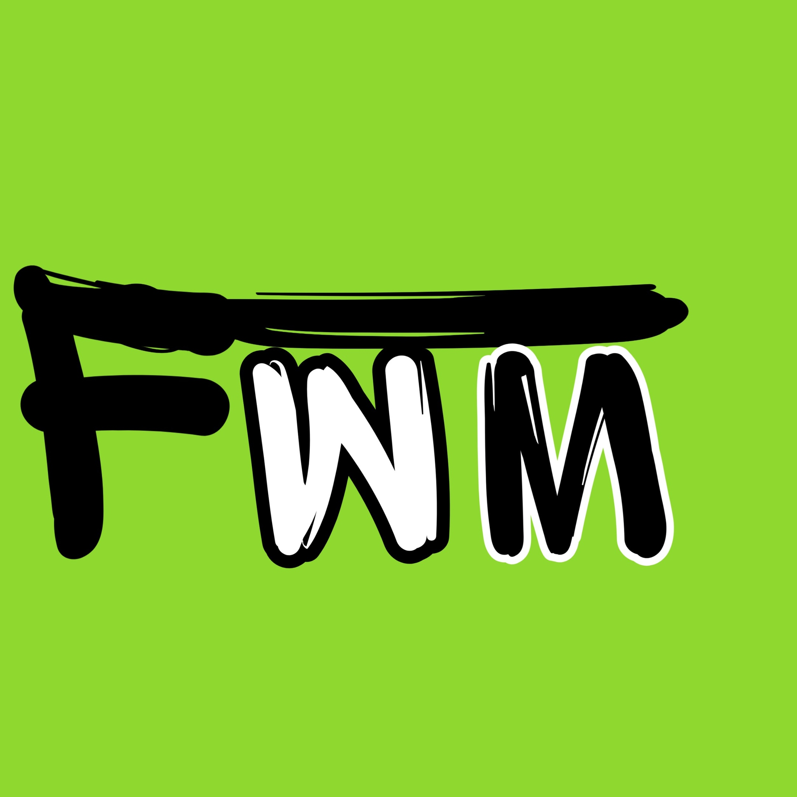
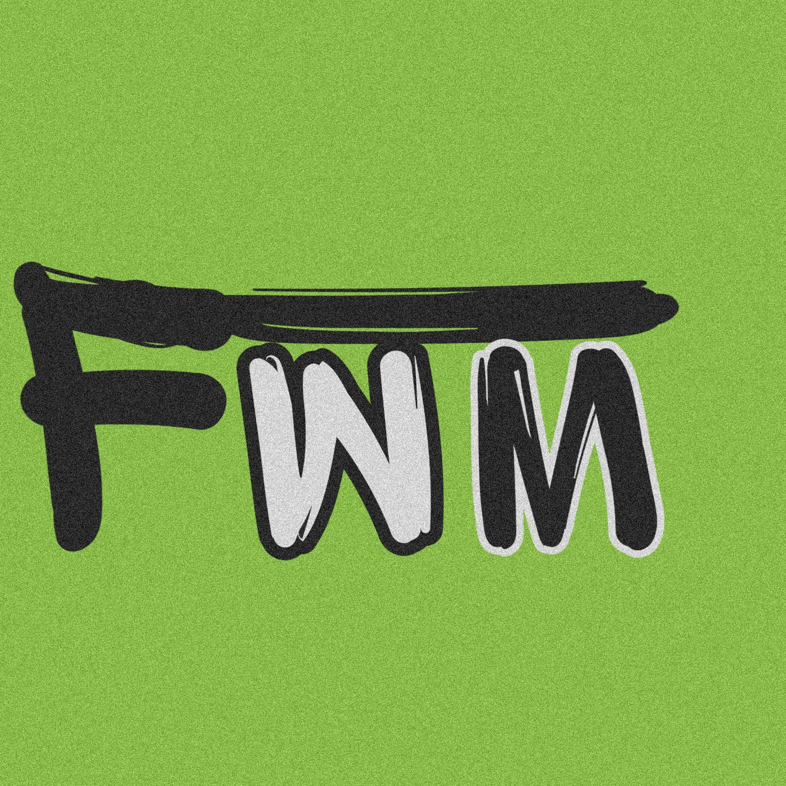
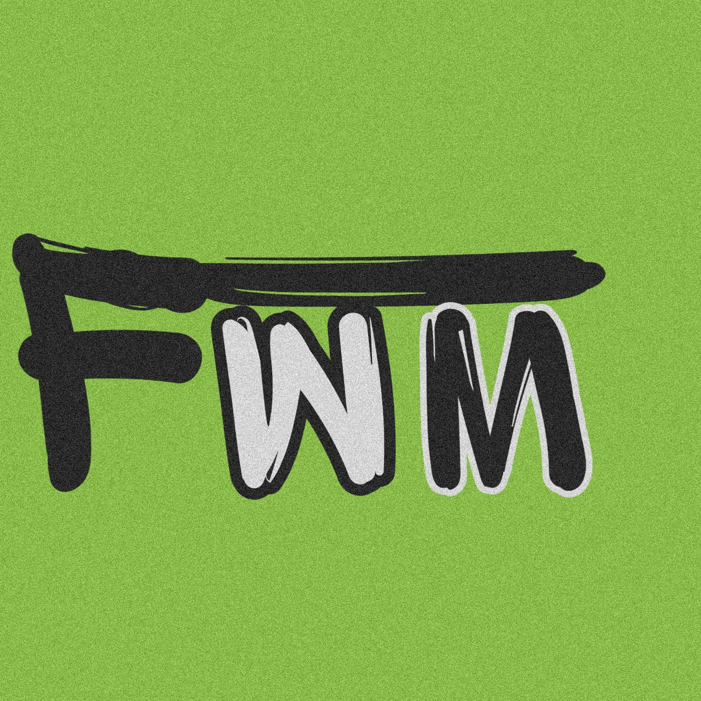

Мы-стартап, научный проект и т.д. Наша основная цель создать карты,
которые были бы удобны для всех слоев общества,
однако в первую очередь мы хотим позаботиться об маломобильных гражданах,
об их комфортном и удобном перемещении из точки а в точку б.
Следующей целью является уже создание функциональных маршрутов с помощью нейронной сети,
то есть если компания друзей хочет дешево отдохнуть система находит заведения под критерии и составляет удобный маршрут.
Авторы проекта: Леонов Владмир Викторович, Габбасов Никита Константинович, Рябов Сергей Сергеевич.
INFO
Support
Main Page
 
